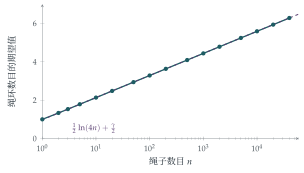

STEP III 2008，第 13 题
继续之前，请先阅读题目（原题为英文）。题目载于 STEP Support Programme 的题目资料库： step.maths.org/questions/08-s3-q13
引子
把一百条绳子放进袋中，只让绳头露在外面。随机选两个绳头绑在一起，如此重复，直至再没有松开的绳头为止。最后你会得到一堆纠缠的绳圈。究竟有多少个？一百条绳子原则上可以结成一百个小环，也可以结成一个巨大的圈。出人意表的是，绳环数目的期望值（expected number）只有约 \(3.3\)；即使有四万条绳子，也不过约 \(6\)。
只要看出一个关键之处，问题便几乎不费吹灰之力：每打一个结之后，不论刚才发生了甚么事，箱中都只是少了一条绳子。这个过程会“忘记”自己的历史，于是绳环的数目就变成一连串独立（independent）掷硬币结果之和，只是每次的概率（probability）各有不同。
动笔之前
把两个绳头绑在一起之后，还剩下多少条绳子（结成环的不再算作一“条”）？这是否取决于有没有结成环？
如果两个绳头属于同一条绳子，这条绳子便成为一个环，余下 \(n - 1\) 条。如果两个绳头属于不同的绳子，这两条绳子便接成较长的一条，同样余下 \(n - 1\) 条。无论是哪一种情况，我们都剩下 \(n - 1\) 条绳子，每条各有两个绳头。
逐步解题
阶段 1 第一个结
绳头共有 \(2n\) 个。先选定一个；与它相绑的绳头等可能地是其余 \(2n - 1\) 个绳头中的任何一个，而当中恰好有一个属于同一条绳子。因此第一个结结成环的概率是 \(\frac{1}{2n - 1}\)，而第一步所产生的绳环数目的期望值就是 \(\frac{1}{2n - 1}\)。
阶段 2 所有的结
根据上面的观察，打第二个结之前的情况是怎样的？第三个呢？设 \(I_k\) 为指示变量，表示在剩下 \(k\) 条绳子时所打的结是否结成环。各个 \(\mathrm{E}(I_k)\) 是多少？
每次打结之前，箱中有 \(k\) 条绳子，其中 \(k = n, n - 1, \ldots, 1\)，而这个结结成环的概率是 \(\frac{1}{2k - 1}\)。（最后一个结在只剩一条绳子时打，必定结成环。）绳环的总数是 \(R = I_n + I_{n-1} + \cdots + I_1\)，所以 \[\mathrm{E}(R) = \sum_{k=1}^{n}\frac{1}{2k - 1} = 1 + \frac13 + \frac15 + \cdots + \frac{1}{2n - 1}. \qed\]
阶段 3 方差
各个指示变量（indicator）\(I_k\) 是否独立？（某一步结成环的概率，是否取决于之前发生过的事？）
在每一步，不论之前发生过甚么事，结成环的概率都是 \(\frac{1}{2k - 1}\)，因为当时的格局永远是“\(k\) 条绳子”。所以各个 \(I_k\) 互相独立，方差（variance）可以相加： \[\mathrm{Var}(R) = \sum_{k=1}^{n}\frac{1}{2k - 1}\Bigl(1 - \frac{1}{2k - 1}\Bigr) = \sum_{k=1}^{n}\frac{2k - 2}{(2k - 1)^2}. \qed\]
阶段 4 四万条绳子
试用调和数（harmonic numbers）表示直至 \(2n - 1\) 为止所有奇数的倒数之和。
把直至 \(2n\) 为止所有正整数的倒数之和，减去其中偶数的倒数之和，便得 \[\sum_{k=1}^{n}\frac{1}{2k - 1} = H_{2n} - \tfrac12H_n \approx \ln(2n) - \tfrac12\ln n = \tfrac12\ln(4n).\] 当 \(n = 40\,000\) 时，\(4n = 160\,000 = 20^4\)，所以 \(\mathrm{E}(R) \approx \frac12 \cdot 4\ln20 \approx 6\)。■ （准确值是 \(6.28\)；两者之差来自欧拉常数（Euler’s constant），因为 \(H_n \approx \ln n + 0.577\)。）

回顾
找出过程忘记了甚么。每打一个结之后，不论过去的经过如何，箱中都是“\(k\) 条绳子”。
又是指示变量。绳环的数目是指示变量之和，每个结对应一个。
有独立性便有方差。由于每一步的概率都不取决于过去，各个指示变量互相独立。
背后的数学
对数增长
绳环数目的期望值以 \(\frac12\ln n\) 的速度增长，而方差与平均值相当接近（两者都是一些很小的概率之和）。根据中心极限定理（central limit theorem）（第 12.24 节），当 \(n\) 很大时，绳环数目近似服从正态分布（normal distribution），平均值和方差都约为 \(\frac12\ln(4n)\)。若有 \(40\,000\) 条绳子，你通常会得到 \(2\) 至 \(11\) 个环。
随机置换的循环
同一个对数也出现在 \(n\) 件物件的随机置换（random permutation）的循环（cycle）数目之中：平均有 \(H_n \approx \ln n\) 个（绳子问题是它的近亲，对应的是 \(\frac12\ln n\)）。随机置换的循环很少：通常有一个巨大的循环包含了大部分元素，而最大循环所占元素的比例，平均约为 \(0.62\)，即 Golomb–Dickman 常数。随机地把绳子绑在一起，情况也是一样：大部分绳子最终都落在一两个长圈之中。这些事实属于随机组合结构（random combinatorial structures）的研究范围，而这门学问又与数论（number theory）有关（一个随机整数的质因数，其表现就像一个随机置换的循环）。
绑绳子问题是某些物理系统的简化模型。溶液中的长链聚合物分子会首尾相接，形成环和链，而成环的统计规律也遵从类似的法则。在纽结理论（knot theory）中，数学家问的是一个更难的问题：一个随机的闭合圈有多大机会打了结？对于很长的随机圈，答案趋向 \(1\)，这个结果由 De Witt Sumners 和 Stuart Whittington 于 1988 年证明。
思维技巧
如果每一步之后，系统所处的状态只取决于已经走了多少步，那么各步的表现便互相独立，期望值和方差都可以直接相加。
这正是优惠券收集问题（coupon collector）（第 9.11 节）背后的想法，当中每个阶段都是一次全新的几何等待；它也在马可夫链（Markov chains）的理论中再次出现，在那里只有当前的状态才起作用。
延伸练习
小的情况。对于 \(n = 2\)，列出所有可能情况，并验证绳环数目的期望值是 \(\frac43\)。
一个大圈。证明整个过程最终得到单一个包含所有绳子的圈的概率是 \(\prod_{k=2}^{n}\bigl(1 - \frac{1}{2k - 1}\bigr)\)，并证明当 \(n\) 很大时，这个概率约为 \(\sqrt{\frac{\pi}{4n}}\)。（提示：找出这个乘积与 \(\binom{2n}{n}\) 的关系。）
置换的循环。证明 \(n\) 件物件的随机置换的循环数目的期望值是 \(H_n\)，方法是逐个元素地构造这个置换（即“中国餐馆”构造法）。
方差。证明 \(\mathrm{Var}(R) = \mathrm{E}(R) - \sum_{k=1}^{n}\frac{1}{(2k - 1)^2}\)，并证明被减去的那个和趋向 \(\frac{\pi^2}{8}\)。
延伸阅读
Peter Winkler, Mathematical Puzzles: A Connoisseur’s Collection（A K Peters），书中收录了这道绑绳子谜题。
Richard Arratia, Andrew Barbour & Simon Tavaré, Logarithmic Combinatorial Structures（European Mathematical Society）。讲述循环、质数与随机结构，可留待日后阅读。
Colin Adams, The Knot Book（American Mathematical Society）。纽结理论入门，内容包括随机纽结。